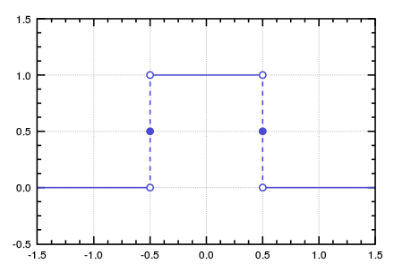
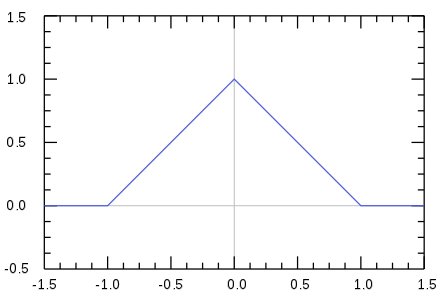
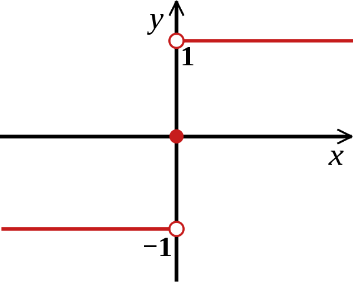
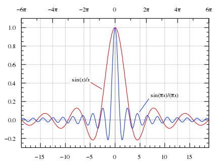
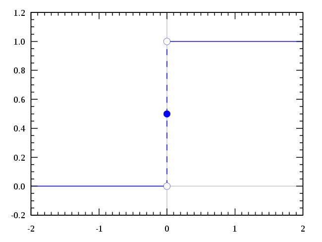
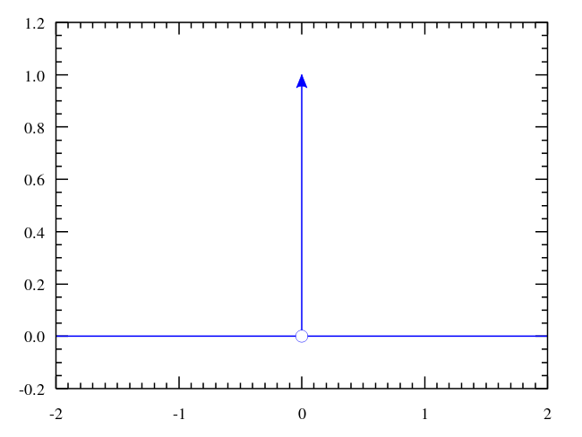

傅里叶级数与傅里叶变换
Table of Contents
在数学中，傅里叶级数是由谐波相关的正弦函数加权求和得到。使用合适的权重，一个周期内的函数和可用来近似该区间内的任意函数。离散傅里叶变换（DFT）是傅里叶级数的一个应用例子。
傅里叶变换（FT）将一个函数（通常是时间的函数，或信号）分解成它的频率组成，一个例子就是五线谱中表示音量和频率的音符（do re mi fa so la xi do）。术语 傅里叶变换 既指函数的频域表示，又指将时间函数与它的频域表示联系起来的数学方法。一个时间函数的傅里叶变换是一个表示频率的复值函数，它的模表示某一频率在原函数中占的比重，它的辐角表示某一频率三角函数的相位。在时域（或频域）中进行的线性运算在频域（或时域）中有着对应的运算。在时域中不方便的运算可以先变换到频域进行相应的运算，再返回到时域。
在正式开始对傅里叶级数和傅里叶变换的介绍之前，首先介绍下正交函数的概念。
1 正交函数
在数学上，正交函数属于一个函数空间，该向量空间具有双线性形式。当函数空间以一个区间作为定义域时，双线性形式可以是两函数之积在区间上的积分：
\(d(f, g) = \int \overline{f(x)}g(x)dx\) ，其中， \(\overline{f(x)}\) 表示 \(f(x)\) 的复共轭。
若积分结果为 0，则 \(f\) 和 \(g\) 是正交的，即 \(d(f, g) = 0, f \not= g\)
就像可以由正交函数组成有限维空间一样，正交函数还可以作为无限维函数的基。上面的积分等价于向量点积：如果点积为 0，则两个向量互相独立。
若某函数集满足在某一区间上，函数集内任意两函数都是正交的，则称该函数集在该区间上为正交函数集。例如，函数集 \(\{1, cos(x), cos(2x), cos(3x), ... cos(nx)\}\) 在 \((-\pi, \pi)\) 上满足这一条件。
若在正交函数集 \(\{ \phi_{1}(t), \phi_{2}(t), ..., \phi_{n}(t) \}\) 之外，找不到一个非零函数与该函数集中的每一个函数正交，则称该函数集为完备正交函数集。
若 \(\{ \phi_{1}(t), \phi_{2}(t), ..., \phi_{n}(t) \}\) 在区间 \((t_{1}, t_{2})\) 上为完备正交函数集，则在 \((t_{1}, t_{2})\) 内，任意函数都可以精确地用函数集内的函数的线性组合表示出来：
\(f(t) = C_1 \phi_1(t) + C_2 \phi_2(t) + ... + C_n \phi_n(t) = \sum\limits_{i = 1}^{n}C_i \phi_i(t) \quad (1)\)
且有 \(i = \frac{\int_{t1}^{t2}f(t)\phi_i(t)dt}{\int_{t1}^{t2}\phi_i(t)\overline{\phi_i(t)}dt}\)
证明：将 \((1)\) 式左右两边乘上 \(overline{\phi_j(t)}\) 并对左右两边在 \((t_1, t_2)\) 上积分，得到：
\(\int_{t1}^{t2}\overline{\phi_j(t)}f(t) = \int_{t1}^{t2}\overline{\phi_{j}(t)}[ \sum\limits_{i = 1}^{n}{C_i}\phi_i(t) ]dt = \sum\limits_{i = 1}^{n}C_i \int_{t1}^{t2}\overline{\phi_j(t)}\phi_i(t)dt\)
由正交条件，除 \(i = j\) 一项外，右式其余部分全为零，从而有：
\(\int_{t1}^{t2}\overline{\phi_i(t)}f(t) = C_i\int_{t1}^{t2}\overline{\phi_i(t)}\phi_i(t)dt\) ，故得证。
2 傅里叶级数
2.1 定义
考虑一个实值函数 \(s(x)\) ，它在一个长为 \(P\) 的区间上可积， \(P\) 将会作为傅里叶级数的周期。作为例子，一般选用 \(x \in [0, 1] , P = 1\) 或 \(x \in [- \pi, \pi] , P = 2\pi\) 。
通过分析来获得每个正弦函数的权重。每个权重使用 \(n\) 作为序号， \(n\) 同时也标明该周期内的 \(n\) 次谐波。对于 \(n\) 次谐波，它的周期为 \(P / n\) ，对应的频率为 \(n / P\) ， \(n\) 次谐波包括 \(cos(2 \pi x \frac{n}{P})\) 和 \(sin(2\pi x \frac{n}{P})\) ，它们的权重可由在区间上的积分得到：
\(a_{n} = \frac{2}{P}\int_Ps(x)cos(2 \pi x \frac{n}{P})dx\)
\(_n = \frac{2}{P}\int_{P}s(x)sin(2 \pi x \frac{n}{P})dx\) 上式还满足下列性质：
- 如果 \(s(x)\) 是 \(P\) 为周期的周期函数，那么可以选取任意长为 \(P\) 的区间作为积分区间
- \(a_0 = \frac{2}{P} \int_{P}s(x)dx, b_0 = 0\)
综合起来，傅里叶级数就是：
\(s_N(x) = \frac{a_0}{2} + \sum\limits_{n = 1}^{N}(a_ncos(\frac{2\pi n x}{P}) + b_nsin(\frac{2 \pi n x}{P}))\)
一般而言，整数 \(N\) 理论上取无穷。但即便如此，这个级数也不一定收敛或对任意的 \(x\) 都与 \(s(x)\) 精确相等。对于”好的“（well-behaved）函数，典型的比如描述物理过程的函数，一般可以认为是相等的。
使用三角恒等式可以得到：
\(A_n cos(\frac{2 \pi n x}{P} - \varphi_n) = A_n cos(\varphi_n)cos(\frac{2 \pi n x}{P}) + A_n sin(\varphi_n) sin(\frac{2 \pi n x}{P})\)
设 \(A_n = \sqrt{a_n ^2 + b_n ^2}\) 和 \(\varphi_n = arctan(\frac{b_n}{a_n})\) ，傅里叶级数的 sin 部分和 cos 部分可以合并为一个带相位的正弦部分。
\(s_N(x) = \frac{A_0}{2} + \sum\limits_{n = 1}^{N}A_N cos(\frac{2 \pi n x}{P} - \varphi_n)\)
处理复函数时的习惯形式是使用欧拉公式将三角函数分开成复指数形式：
\(cos(\frac{2 \pi nx}{P} - \varphi_n) = \frac{1}{2}e^{i\frac{(2 \pi nx)}{P} - \varphi_n} + \frac{1}{2}e^{-i\frac{(2 \pi nx)}{P} - \varphi_n} = (\frac{1}{2}e^{-i\varphi_n}e^{i\frac{2 \pi (+n)x}{P}}) + (\frac{1}{2}e^{-i\varphi_n}e^{i\frac{2 \pi (-n)x}{P}})\)
通过定义：
\(c_n = \frac{A_0}{2} (n = 0)\)
\(c_n = \frac{A_n}{2}e^{-i\varphi_n} (n > 0)\)
\(c_n = \overline{c_{(-n)}} (n < 0)\)
综合在一起即
\(c_n = \frac{1}{P}\int_{P}s(x)e^{-i\frac{2 \pi nx}{P}}dx\)
可得最终形式为：
\(s_N(x) = \sum\limits_{n = -N}^{N}c_n e^{i\frac{2 \pi nx}{P}}\)
如果 \(s(x)\) 是实数 \(x\) 的复值函数，那么该函数的实部和虚部都可由傅里叶级数表示出来。
\(c_{Rn} = \frac{1}{P}\int_{P}Re(s(x))e^{-i\frac{2 \pi nx}{P}}dx\)
\(c_{In} = \frac{1}{P}\int_{P}Im(s(x))e^{-i\frac{2 \pi nx}{P}}dx\)
\(s_N(x) = \sum\limits_{n = -N}^{N}c_{Rn}e^{i\frac{2 \pi nx}{P}} + i\sum\limits_{n = -N}^{N}c_{In}e^{i\frac{2 \pi nx}{P}}\)
定义 \(c_n = c_{Rn} + i \cdot c_{In} = \int_{P}s(x)e^{-i\frac{2 \pi nx}{P}}dx\) ，得
\(s_N(x) = \sum\limits_{n = -N}^{N}c_n e^{i\frac{2 \pi nx}{P}}\)
2.2 收敛性
在工程应用中，傅里叶级数被认为在除了不连续点的所有地方收敛，因为工程中遇到的函数的性质一般都很好。特别地，如果 \(s\) 是连续的而且 \(s(x)\) 的导数（不一定处处存在）在 \([x_0, x_0 +P]\) 是平方可积的（ \(\int_{x_0}^{x_0+P}|f(x)|^{2}dx < \infty\) ） ，那么 \(s\) 的傅里叶级数将完全收敛于 \(s(x)\) 。如果函数在区间 \([x_0, x_0 +P]\) 上平方可积，那么傅里叶级数几乎收敛于每一点。
狄里赫利1（Dirichlet）条件：对于函数 \(x(t)\) ，若
- \(x(t)\) 局部绝对可积， \(\int_{P}|x(t)|dt < \infty\)
- 在任何有限区间内，\(x(t)\) 只有有限个极大值和极小值
- 在任何有限区间内，\(x(t)\) 不连续点个数有限，且在不连续点处，\(x(t)\) 有限
则 \(x(t)\) 的傅里叶级数将在所有连续点收敛于\(x(t)\) ，在不连续点收敛于 \(x(t)\) 左极限和右极限的平均值。
2.3 性质
记：
- \(z^*\) 为 \(z\) 的复共轭
- \(f(x), g(x)\) 是定义在 \(0 < x \leq T\) 上的，以 \(T\) 为周期的函数
- \(F[n], G[n]\) 是 \(f, g\) 的指数形式傅里叶级数的系数
2.4 基本运算性质
下表给出了傅里叶级数的一些运算性质，它的性质与傅里叶变换极其相似，故大部分证明留到傅里叶变换时在加以说明。
表中时域变换与频域变换一一对应。
| 性质 | 时域 | 频域 |
|---|---|---|
| 线性性 | \(a \cdot f(x) + b \cdot g(x)\) | \(a \cdot F[n] + b \cdot G[n]\) |
| 时间取反 | \(f(-x)\) | \(F[-n]\) |
| 时域共轭 | \(f(x)^*\) | \(F[-n]^*\) |
| 时间取反和时域共轭 | \(f(-x)^*\) | \(F[n]^*\) |
| 取时域实部 | \(Re(f(x))\) | \(\frac{1}{2}(F[n] + F[-n]^*)\) |
| 取时域虚部 | \(Im(f(x))\) | \(\frac{1}{2i}(F[n] - F[-n]^*)\) |
| 取频域实部 | \(\frac{1}{2}(f(x) + f(-x)^*)\) | \(Re(F[n])\) |
| 取频域虚部 | \(\frac{1}{2i}(f(x) - f(-x)^*)\) | \(Im(F[n])\) |
| 时移 | \(f(x - x_{0})\) | \(F[n] \cdot e^{-i\frac{2 \pi x_{0}}{T}n}\) |
| 频移 | \(f(x) \cdot e^{i\frac{2 \pi n_{0}}{T}x}\) | \(F[n - n_{0}]\) |
| 时域微分 | \(\frac{df}{dx}\) | \(\frac{2 \pi i }{T}nF[n]\) |
| 时域积分 | \(\int_{- \infty}^{x}f(t)dt\) | \(\frac{1}{\frac{2 \pi i}{T}n}F[n]\) |
| 时域卷积 | \(\int_{T}f(\tau)g(t - \tau)d \tau\) | \(TF[n]G[n]\) |
| 频域卷积 | \(f(x)g(x)\) | \(\sum\limits_{m = -\infty}^{+\infty}F[m]G[n - m]\) |
2.4.1 黎曼-勒贝格定理2（Riemann–Lebesgue lemma）
如果 \(f(x)\) 是可积的，则
\(\lim\limits_{|n| \rightarrow \infty} F[n] = 0\)
3 傅里叶变换
傅里叶变换来自于对傅里叶级数的研究。在对傅里叶级数的研究中发现，复杂的周期函数可以被写成简单的正弦函数的和。傅里叶变换是对傅里叶级数的一个拓展，它允许函数的周期拉长并达到无穷。
周期函数不满足绝对可积的条件，但借助狄拉克函数 \(\delta(x)\) 可以对其进行表示。
3.1 定义
函数 \(f\) 的傅里叶变换一般记作 \(\hat{f}\) ，即在函数符号上加帽。定义可积函数 \(f: R \rightarrow C\) 的傅里叶变换有着多种形式。
其中一种为：
\(\hat{f}(\xi) = \int_{-\infty}^{\infty}f(x)e^{-2 \pi i \xi x}dx, \xi \in R\)
在合适的条件下，\(f\) 可以由 \(\hat{f}\) 的逆变换得到：
\(f(x) = \int_{-\infty}^{\infty}\hat{f}(\xi)e^{2 \pi i x \xi}d \xi, x \in R\)
除了使用频率，也可以使用角频率来表示，取 \(\omega = 2 \pi \xi\) ：
\(\hat{f}(\omega) = \int_{R^n}f(x)e^{-i\omega x} dx\)
逆变换变为：
\(f(x) = \frac{1}{(2 \pi)^n}\int_{R^n}\hat{f}(\omega)e^{i\omega x} d\omega\)
3.2 傅里叶级数与傅里叶变换的关系
对于在一段区间上之外全为 0 的函数 \(f\) ，它的傅里叶级数和傅里叶变换之间有着紧密联系。对这样一个函数，我们可以任意选择包含它所有非零点的区间来求取它的傅里叶级数，它的傅里叶变换也易于求取。随着我们增大我们选择的区间，傅里叶级数的系数变得越来越像傅里叶变换，对傅里叶级数的求和也越来越像傅里叶逆变换。
更准确地，假设 \(T\) 足够大，\([-\frac{T}{2}, \frac{T}{2}]\) 包含了 \(f\) 不全为 0 的全部部分，傅里叶级数的系数 \(c_n\) 为：
\(c_n = \frac{1}{T}\int_{-\frac{T}{2}}^{\frac{T}{2}}f(x)e^{-2 \pi i(\frac{n}{T})x}dx\)
考虑到傅里叶变换的定义，可以得到：
\(c_n = \frac{1}{T}\hat{f}({\frac{n}{T}})\)
因为 \(f(x)\) 在 \([-\frac{T}{2}, \frac{T}{2}]\) 之外都为零，因此傅里叶系数和傅里叶变换乘上 \(\frac{1}{T}\) 的值是相等的。
在合适的条件下，\(f\) 的傅里叶级数等于原函数 \(f\) ，换句话说，\(f\) 可以写成：
\(f(x) = \sum\limits_{n = -\infty}^{\infty}c_n e^{2 \pi i (\frac{n}{T})x} = \sum\limits_{n = -\infty}^{\infty}\hat{f}(\xi_n)e^{2 \pi i \xi_n x}\Delta \xi\)
其中，\(\xi_n = \frac{n}{T}, \Delta \xi = \frac{n + 1}{T} - \frac{n}{T} = \frac{1}{T}\)
上式的第二项是黎曼和5，通过使 \(T \rightarrow \infty\) ，它将会收敛于求取傅里叶逆变换的积分，即 \(\int_{-\infty}^{\infty}\hat{f}(\xi)e^{2 \pi i x \xi}d \xi\)
在傅里叶级数中，\(c_n\) 可被看作\(f\) 的傅里叶级数中某一波的“占比”。相似地，傅里叶变换可被看作是对函数中某一频率的占比衡量，我们可以通过积分将这些波组合起来，从而得到原函数。
3.3 性质
3.3.1 基本性质
在下面的性质介绍中用到的函数 \(f(x), g(x), h(x)\) 都是可积函数，并满足
\(\int_{-\infty}^{\infty}|f(x)|dx < \infty\)
将它们的傅里叶变换记作 \(\hat{f}(\xi), \hat{g}(\xi), \hat{h}(\xi)\)
- 线性性
对任意复数 \(a, b\) ，设 \(h(x) = af(x) + bg(x)\) ，则有
\(\hat{h}(\xi) = a \cdot \hat{f}(\xi) + b \cdot \hat{g}(\xi)\)
- 时移性
对任意实数 \(x_0\) ，若 \(h(x) = f(x - x_0)\) ，则
\(\hat{h}(\xi) = e^{-2 \pi i x_0 \xi}\hat{f}(\xi)\)
证明：
\(\hat{h}(\xi) = \int_{-\infty}^{\infty}f(x - x_0)e^{-2\pi i \xi x}dx\)
令 \(\tau = x - x_0\) ，上式变为：
\(\int_{-\infty}^{\infty}f(\tau)e^{-2\pi i \xi (\tau + x_0)}d(\tau + x_0) = e^{-2 \pi i\xi x_0}\int_{-\infty}^{\infty}f(\tau)e^{-2\pi i \xi \tau}d\tau = e^{-2 \pi i \xi x_0}\hat{f}(\xi)\)
从而得证。
- 频移性
对任意实数 \(\xi_0\) ，若 \(h(x) = e^{2 \pi i x \xi_0}f(x)\) ，则
\(\hat{h}(\xi) = \hat{f}(\xi - \xi_0)\)
证明：
\(\hat{h}(\xi) = \int_{-\infty}^{\infty}e^{2 \pi i x \xi_0}f(x)e^{-2\pi i \xi x}dx = \int_{-\infty}^{\infty}f(x)e^{-2\pi i (\xi - \xi_0) x}dx = \hat{f}(\xi - \xi_0)\)
得证。
- 时域伸缩
对非零实数 \(a\) ，若 \(h(x) = f(ax)\) ，则
\(\hat{h}(\xi) = \frac{1}{|a|}{\hat{f}(\frac{\xi}{a})}\)
证明：
\(\hat{h}(\xi) = \int_{-\infty}^{\infty}f(ax)e^{-2\pi i \xi x}dx\)
令 \(\tau = ax\) ，则上式变为：
\(\int_{-\infty}^{\infty}f(\tau)e^{-2\pi i \xi \frac{\tau}{a}}d\frac{\tau}{a} = \frac{1}{a}\int_{-\infty}^{\infty}f(\tau)e^{-2\pi i \frac{\xi}{a} \tau}d\tau = \frac{1}{a}\hat{f}(\frac{\xi}{a})\)
当 \(a > 0\) 时，\(\frac{1}{a} > 0\) ，当 \(a < 0\) 时，由 \(\tau = ax\) 可知，此时积分上下限发生了反转，从而使得系数变为 \(- \frac{1}{a}\) 依然大于 0。故得证。
- 共轭性
若 \(h(x) = \overline{f(x)}\) ，则
\(\hat{h}(\xi) = \overline{\hat{f}(-\xi)}\)
证明：
易知 \(\hat{f}(\xi) = \int_{-\infty}^{\infty}f(x)e^{-2\pi i \xi x}dx\) ，得
\(\overline{\hat{f}(\xi)} = \overline{\int_{-\infty}^{\infty}f(x)e^{-2\pi i \xi x}dx} = \int_{-\infty}^{\infty}\overline{f(x)}e^{2\pi i \xi x}dx \quad (\overline{e^{-ix}} = e^{ix})\) ，
以 \(-\xi\) 取代 \(\xi\) ，即可得证。
- 取实部和虚部
若 \(h(x) = Re(f(x))\) ,则
\(\hat{h}(\xi) = \frac{1}{2}(\hat{f}(\xi) + \overline{\hat{f}(-\xi)})\)
若 \(h(x) = Im(f(x))\) ，则
\(\hat{h}(\xi) = \frac{1}{2i}(\hat{f}(\xi) - \overline{\hat{f}(-\xi)})\)
对频域部分取实部和虚部，也有相似结论。
- 时域微分
假设 \(f(x)\) 是绝对连续可导函数，\(f, f^{'}\) 都是可积的，则有
\(\hat{f^{'}}(\xi) = 2\pi i\xi \hat{f}(\xi)\)
证明：
\(f(x) = \int_{-\infty}^{\infty}\hat{f}(\xi)e^{2\pi i \xi x}d\xi\) ，对两边求微分，得到
\(\frac{df(x)}{dx} = \int_{-\infty}^{\infty}2 \pi i \xi \hat{f}(\xi)e^{2\pi i \xi x}d\xi = \int_{-\infty}^{\infty}(2 \pi i \xi \hat{f}(\xi))e^{2\pi i \xi x}d\xi\)
得证。
更一般地，\(n\) 阶导数 \(f^{(n)}\) 为
\(\hat{f^{(n)}}(\xi) = (2\pi i\xi)^{n} \hat{f}(\xi)\)
通过傅里叶变换并使用这些公式，一些常微分方程可以被转化为代数方程，这一般更容易解决。上面的公式可以直观地说明一个性质：当且仅当\(\hat{f}(\xi)\) 随 \(|\xi| \rightarrow \infty\) 迅速趋近于 0，\(f(x)\) 才是平滑的。
- 频域微分
\((\hat{f})^{'}(\xi) = \widehat{(-2 \pi i x f(x))}\)
证明：
\(\hat{f}(\xi) = \int_{-\infty}^{\infty}f(x)e^{-2\pi i \xi x}dx\)
两边对 \(\xi\) 微分，得到
\((\hat{f})^{'}(\xi) = \int_{-\infty}^{\infty}-2 \pi i xf(x)e^{-2\pi i \xi x}dx\)
得证
更一般地，\(n\) 阶导数为
\((\hat{f})^{(n)}(\xi) = \widehat{((-2 \pi i x)^n f(x))}\)
- 时域积分
\(\widehat{\int_{-\infty}^{x}{f}(t)dt} = \frac{1}{2} \hat{f}(\xi)(\delta(\xi) + \frac{1}{i \pi \xi})\)
证明：
由卷积性质，\(\int_{-\infty}^{x}{f}(t)dt = f(x) * u(x)\) ，其中 \(u(x)\) 为单位阶跃函数
由 \(\hat{u}(\xi) = \frac{1}{2}(\delta{(\xi)} + \frac{1}{i \pi \xi})\) ，得到上式。
- 频域积分
\(\int_{-\infty}^{\xi}\hat{f}(t)dt = \widehat{\frac{1}{2}f(x)(\delta(x) - \frac{1}{i \pi x})}\)
- 函数下的面积
\(\hat{f}(0) = \int_{-\infty}^{\infty}f(x)dx\)
3.3.2 变换的可逆性和周期性
在适当条件下，函数 \(f\) 可由它的傅里叶变换 \(\hat{f}\) 恢复。记傅里叶变换算符为 \(F\) ，即 \(F(f) = \hat{f}\) 。对合适的函数，将傅里叶变换两次应用于该函数相当于反转该函数，即 \(F^{2}(f)(x) = \hat{f}(-x)\) ，也就是“时域反转”。因为反转的周期为 2，则有 \(F^{4}(f)(x) = f(x)\) 。因此傅里叶变换算符的周期为 4，傅里叶反变换也可由应用 3 次傅里叶变换得到，即 \(F^3 (\hat{f}) = f\)
更准确地，定义恒等算符 \(Id\) , \(Id(f): f \rightarrow f\) ，定义反转算符 \(P\), \(P[f]: t \rightarrow f(-t)\)
\(F^0 = Id, F^1 = F,\)
\(F^2 = P, F^3 = F^{-1} = P \circ F = F \circ P\)
\(F^4 = Id\)
3.3.3 黎曼-勒贝格定理
傅里叶变换可以在某些情况下用于不可积的函数，但傅里叶变换对可积函数有几条非常强的性质。
可积函数 \(f\) 的傅里叶变换 \(\hat{f}\) 是一致连续6的， 且有
\(||\hat{f}||_{\infty} \leq ||f||_{1}\)
根据黎曼-勒贝格定理，有
\(\hat{f}(\xi) \rightarrow 0 \quad as \quad |\xi| \rightarrow \infty\)
3.3.4 帕塞瓦尔定理
记 \(f(x), g(x)\) 是可积的，\(\hat{f}(\xi), \hat{g}(\xi)\) 是它们的傅里叶变换，若 \(f(x), g(x)\) 同时还是平方可积的，则：
\(\int_{-\infty}^{\infty}f(x)\overline{g(x)}dx = \int_{-\infty}^{\infty}\hat{f}(\xi)\overline{\hat{g}(\xi)}d\xi\)
Plancherel theorm 表明：
\(\int_{-\infty}^{\infty}|f(x)|^2dx = \int_{-\infty}^{\infty}|\hat{f}(\xi)|^2d\xi\)
3.3.5 卷积定理
傅里叶变换可以将一个域中的卷积变为另一个域中的乘积。如果 \(f(x), g(x)\) 是可积函数，它们的傅里叶变换是 \(\hat{f}(\xi), \hat{g}(\xi)\) ，那么卷积的傅里叶变换可由 \(\hat{f}(\xi), \hat{g}(\xi)\) 的乘积给出。一句话：函数卷积的傅里叶变换是函数傅里叶变换的乘积7。
记 \(h(x) = (f * g)(x) = \int_{-\infty}^{\infty}f(y)g(x - y)dy\) ，则有
\(\hat{h}(\xi) = \hat{f}(\xi) \cdot \hat{g}(\xi)\)
反过来，如果 \(f(x)\) 可以分解成两个可积函数 \(p(x), q(x)\) 的乘积，那么 \(f(x)\) 的傅里叶变换可以由 \(\hat{p}(\xi), \hat{q}(\xi)\) 的卷积给出。
对上述部分性质加以整理，可以得到一张表：
| 性质 | 时域 | 频域（频率） | 频域 （角频率） |
|---|---|---|---|
| 线性性 | \(a\cdot f(x) + b \cdot g(x )\) | \(a \cdot \hat{f}(x) + b \cdot \hat{g}(x)\) | \(a\cdot \hat{f}(\omega) + b \cdot \hat{g}(\omega)\) |
| 共轭性 | \(f\quad is \quad real\) | \(\hat{f}(-\xi) = \overline{\hat{f}(\xi)}\) | \(\hat{f}(-\omega) = \overline{\hat{f}(\omega)}\) |
| 尺度伸缩 | \(f(ax)\) | \(\frac{1}{abs(a)}\hat{f}(\frac{\xi}{a})\) | \(\frac{1}{abs(a)}\hat{f}(\frac{\omega}{a})\) |
| 时移 | \(f(x - a)\) | \(e^{-2 \pi i a \xi}\hat{f}(\xi)\) | \(e^{- i a \omega}\hat{f}(\omega)\) |
| 频移 | \(f(x)e^{iax}\) | \(\hat{f}(\xi - \frac{a}{2 \pi})\) | \(\hat{f}(\omega - a)\) |
| 对偶性 | \(\hat{f}(x)\) | \(f(-\xi)\) | \(2 \pi f(-\omega)\) |
| 时域微分 | \(f^{'}(x)\) | \(2 \pi i \xi \hat{f}(\xi)\) | \(i \omega \hat{f}(\omega)\) |
| 时域积分 | \(\int_{-\infty}^{x}f(t)dt\) | \(\frac{1}{2} \hat{f}(\xi)(\delta(\xi) + \frac{1}{i \pi \xi})\) | \(\hat{f}(\omega)(\pi \delta(\omega) + \frac{1}{i \omega})\) |
| 时域卷积 | \(f(x) * g(x)\) | \(\hat{f}(\xi) \cdot \hat{g}(\xi)\) | \(\hat{f}(\omega) \cdot \hat{g}(\omega)\) |
3.4 常用函数的傅里叶变换
下表中，绝对值记为 \(abs\) 。使用 \(rect(x)\) 来代表门函数8（矩形函数），使用 \(tri(x)\) 代表三角形函数9，使用 \(sgn(x)\) 表示符号函数，它们分别为：
| rect | tri | sgn |
|  |  |  |
此外，还有 \(sinc(x) = \frac{sin(\pi x)}{\pi x}\) ，它也可以被定义成 \(sinc(x) = \frac{sin(x)}{x}\) 。下表中使用的都是带 \(\pi\) 的 \(sinc\) 10函数。单位阶跃函数（赫维赛德阶跃函数11）和单位冲激函数（狄拉克δ函数12） \(u(x), \delta(x)\) 的图形如下图所示：
| sinc | u | delta |
|  |  |  |
| 函数 | 傅里叶变换（频率） | 傅里叶变换（角频率） |
|---|---|---|
| \(rect(ax)\) | \(\frac{1}{abs(a)} \cdot sinc(\frac{\xi}{a})\) | \(\frac{1}{abs(a)} \cdot sinc(\frac{\omega}{2 \pi a})\) |
| \(sinc(ax)\) | \(\frac{1}{abs(a)} \cdot rect(\frac{\xi}{a})\) | \(\frac{1}{abs(a)} \cdot rect(\frac{\omega}{2 \pi a})\) |
| \(tri(ax)\) | \(\frac{1}{abs(a)} \cdot sinc^2(\frac{\xi}{a})\) | \(\frac{1}{abs(a)} \cdot sinc^2(\frac{\omega}{2 \pi a})\) |
| \(sinc^2(ax)\) | \(\frac{1}{abs(a)} \cdot tri(\frac{\xi}{a})\) | \(\frac{1}{abs(a)} \cdot tri(\frac{\omega}{2 \pi a})\) |
| \(e^{-ax}u(x), Re(a) > 0\) | \(\frac{1}{a + 2 \pi i \xi}\) | \(\frac{1}{a + i\omega}\) |
| \(e^{-ax^2}, Re(a) >0\) | \(\sqrt{\frac{\pi}{a}} \cdot e^{- \frac{(\pi \xi)^2}{a}}\) | \(\sqrt{\frac{\pi}{a}} \cdot e^{- \frac{\omega^2}{4a}}\) |
| \(e^{-a \cdot abs(x)} , Re(a) > 0\) | \(\frac{2a}{a^2 + 4 \pi^2 \xi^2}\) | \(\frac{2a}{a^2 + \omega^2}\) |
| \(\frac{x^{n - 1}}{(n - 1)!}e^{-ax}u(x), Re(a) > 0\) | \(\frac{1}{(a + 2 \pi i \xi)^n}\) | \(\frac{1}{(a + i \omega)^n}\) |
| \(e^{-at}cos(bx)u(t)\) | \(\frac{a + 2 \pi i \xi}{(a + 2 \pi i \xi)^2 + 4 \pi^2 b^2}\) | \(\frac{a + i\omega}{(a + i\omega)^2 + b^2}\) |
| \(e^{-at}sin(bx)u(t)\) | \(\frac{2 \pi b}{(a + 2 \pi i \xi)^2 + 4 \pi^2 b^2}\) | \(\frac{b}{(a + i\omega)^2 + b^2}\) |
对于周期函数和不满足绝对可积的函数，它们可以借助狄拉克函数 \(\delta(x)\) 表示出来：
| 函数 | 傅里叶变换（频率） | 傅里叶变换（角频率） |
|---|---|---|
| \(1\) | \(\delta(\xi)\) | \(2 \pi \delta(\omega)\) |
| \(e^{iax}\) | \(\delta(\xi - \frac{a}{2\pi})\) | \(2 \pi \delta(\omega - a)\) |
| \(\delta(x)\) | \(1\) | \(1\) |
| \(\delta(x - x_0)\) | \(e^{-2 \pi i x_0 \xi}\) | \(e^{-i x_0 \omega}\) |
| \(cos(ax)\) | \(\frac{1}{2}(\delta(\xi - \frac{a}{2\pi}) + \delta(\xi + \frac{a}{2\pi}))\) | \(\pi(\delta(\omega - a) + \delta(\omega + a))\) |
| \(sin(ax)\) | \(\frac{1}{2i}(\delta(\xi - \frac{a}{2\pi}) - \delta(\xi + \frac{a}{2\pi}))\) | \(-i\pi(\delta(\omega - a) - \delta(\omega + a))\) |
| \(x^n, n \in N^+\) | \((\frac{i}{2\pi})^n\delta^{(n)}(\xi)\) | \(2\pi i^n\delta^{(n)}(\omega)\) |
| \(\frac{1}{x}\) | \(-i \pi sgn(\xi)\) | \(-i \pi sgn(\omega)\) |
| \(\frac{1}{x^n}, n \in N^+\) | \(-i\pi \frac{(-2 \pi i \xi)^{n - 1}}{(n - 1)!}sgn(\xi)\) | \(-i\pi \frac{(-i \omega)^{n - 1}}{(n - 1)!}sgn(\omega)\) |
| \(sgn(x)\) | \(\frac{1}{i \pi \xi}\) | \(\frac{2}{i \omega}\) |
| \(u(x)\) | \(\frac{1}{2}(\frac{1}{i \pi \xi} + \delta{\xi})\) | \(\pi(\frac{1}{i\pi \omega} + \delta(\omega))\) |
| \(\sum\limits_{n = - \infty}^{\infty}\delta(x - nT)\) | \(\frac{1}{T}\sum\limits_{k = - \infty}^{\infty}\delta(\xi - \frac{k}{T})\) | \(\frac{2\pi}{T}\sum\limits_{k = - \infty}^{\infty}\delta(\omega - \frac{2 \pi k}{T})\) |
4 友情链接
对于如何形象地描述什么是傅里叶变换，笔者实属无能，读者可以参考一些生动的科普文章和科普视频，我在此列出一些，以供参考：
傅里叶分析之掐死教程（完整版）：https://zhuanlan.zhihu.com/p/19763358 （作者：Henrich）
形象展示傅里叶变换：https://www.bilibili.com/video/BV1pW411J7s8 （作者：3Blue1Brown）
5 参考资料
《信号分析与处理》 —— 马立玲， 沈伟
Fourier series：https://en.wikipedia.org/wiki/Fourier_series
Fourier transform：https://en.wikipedia.org/wiki/Fourier_transform